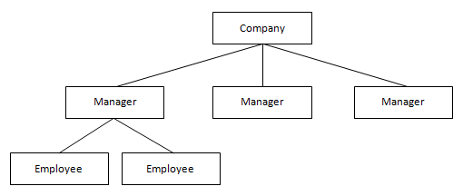
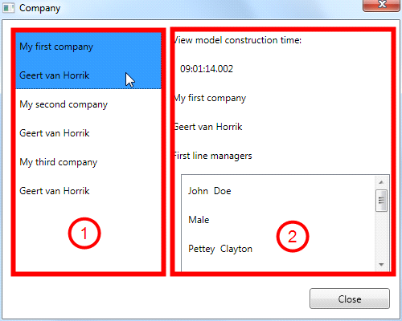

The UserControl is a very interesting class of Catel, and fully shows the power of the MVVM Framework that ships with Catel. The user control is able to fully integrate MVVM on a user control level and solves the “nested user control” problem, which is explained in detail a bit further in this documentation.
Automatic construction without parameter
It simplest thing to do is to create a view model that has an empty constructor (thus without parameters). If the UserControl is added to the visual tree, the view model is instantly constructed and available for usage. A view model that is used inside a UserControl implementation is exactly the same as the DataWindow implementation. This way, the developers don’t have to worry about whether they can currently writing a view model that is meant for a window or a control.
Automatic construction with parameter
A bit harder (it’s still very easy, don’t worry), but much more powerful is the construction with a parameter. This way, a control is forced to use the data context to create the view model. If there is no valid data context that can be used to construct the view model, no view model will be constructed. This sounds a little abstract, but let’s take a look to a more meaningful example.
Say, you want to write an application to manage company trees. The top-level of the data exists of a collection of Company objects (models). You want to display the companies inside an ItemsControl, which is a very good way to represent the companies. But how are you going to display the company details? You can simply create a template, but I wouldn't recommend that because the company representation can become very complex (and dynamic), because it consists of Person objects that can have children (employees), and the children are person objects as well, that can have children, etc. You might thing that this is a very simple scenario, which it actually is to make sure that all readers understand it correctly. But, there can be a lot of complex tree scenarios. For example, for a client, I had to write a complete treatment overview of a patient, which consists of a lot of different objects, which all have a child collection of other object types. Then you can save yourself with writing a simple and generic data template. Below is a graphical form of the example:

Now comes the real power of UserControl in to play. For example, to show the company and its managers, one has to write an items control that contains the companies and then a user control containing the details of the company. For the sake of simplicity, I will leave the employees out for now. The usage might seem a bit complex, but once you get the hang of it, it’s actually quite simple. First of all, create a view model that has a constructor of the model that you want to accept, in our case the Company class of which we will show the details:
/// <summary>
/// Initializes a new instance of the <see cref="CompanyViewModel"/> class.
/// </summary>
/// <param name="company">The company.</param>
public CompanyViewModel(Models.Company company)
: base()
{
// Store values
Company = company;
}
As you can see, the view model can only be constructed by passing a company model. This is quite normal, because how can we show details of a non-existing (null) company? Now we have a view model, we can create our user control:
<catel:UserControl x:Class="Catel.Articles._03___MVVM.Examples.UserControlWithParameter.Company"
xmlns="http://schemas.microsoft.com/winfx/2006/xaml/presentation"
xmlns:x="http://schemas.microsoft.com/winfx/2006/xaml"
xmlns:catel="http://schemas.catelproject.com">
<!-- For the sake of simplicity, content is left out -->
</catel:UserControl>
Note that the class definition is now catel:UserControl instead of UserControl
The code behind is even simpler:
/// <summary>
/// Interaction logic for Company.xaml
/// </summary>
public partial class Company : UserControl
{
/// <summary>
/// Initializes a new instance of the <see cref="Company"/> class.
/// </summary>
public Company()
{
InitializeComponent();
}
}
Now the control is created (I don’t want to focus on the actual control content here, since it’s not important), we can use the user control in our main window that has a collection of companies. The view model also has a SelectedCompany property representing the selected company inside the listbox. Then, we use the Company control and bind the data context to the SelectedCompany property:
<!-- Items control of companies -->
<ListBox Grid.Column="0" ItemsSource="{Binding CompanyCollection}" SelectedItem="{Binding SelectedCompany}">
<ListBox.ItemTemplate>
<DataTemplate>
<StackPanel>
<Label Content="{Binding Name}" />
<Label Content="{Binding CEO.FullName}" />
</StackPanel>
</DataTemplate>
</ListBox.ItemTemplate>
</ListBox>
<!-- Company details -->
<UserControlWithParameter:Company Grid.Column="1" DataContext="{Binding SelectedCompany}" />
As the code shows, there is a listbox containing all the companies. The data context of the user control is bound to the SelectedCompany. The cool thing is that as soon as a company is selected, the user control will create an instance of the CompanyViewModel because it accepts a Company instance in the constructor. The screenshot of the example application will (hopefully) give more insight in what change is causing the exact view model creation:

In the image above, you see 2 controls. The first one is an items control that binds to the CompaniesViewModel because the window represents list of companies. The second one is the CompanyControl, which dynamically constructs the CompanyViewModel as soon as a company is selected at the left. This means that for every company selection, and new view model is constructed. This way, you can handle the saving, canceling and closing of the view model before the next is view model is constructed.
The best thing about this is that you can actually start re-using user controls throughout your whole application. Instead of having the main view model have to define all the properties of (sub) controls, now each control has its own view model, and you don’t have to worry about the implementation in the parent of a control. Simply set the data context of the user control to the right type instance, and the user control will handle the rest.
The easiest way to create a new UserControl is to use item templates
Mapping properties from/to view model
When developing custom user controls, you still want to use the power of MVVM, right? With Catel, all of this is possible. All other frameworks require a developer to manually set the data context on a user control. Or what about mapping user control properties from/to the view model?
To map a property of a custom user control to a view model and back, the only thing a developer has to do is to decorate the dependency property of the control with the ViewToViewModelAttribute. Normally, a developer has to build logic that subscribes to property changes of both the view model and the control, and then synchronize all the differences. Thanks to the ViewToViewModelAttribute, the UserControl that ships with Catel takes care of this. The usage of the attribute looks as follows:
[ViewToViewModel]
public bool MyDependencyProperty
{
get { return (bool)GetValue(MyDependencyPropertyProperty); }
set { SetValue(MyDependencyPropertyProperty, value); }
}
// Using a DependencyProperty as the backing store for MyDependencyProperty. This enables animation, styling, binding, etc...
public static readonly DependencyProperty MyDependencyPropertyProperty =
DependencyProperty.Register("MyDependencyProperty", typeof(bool), typeof(MyControl), new UIPropertyMetadata(true));
By default, the attribute assumes that the name of the property on the view model is the same as the property on the user control. To specify a different name, use the overload of the attribute constructor as shown in the following example:
[ViewToViewModel("MyViewModelProperty")]
public bool MyDependencyProperty
... (remaining code left out for the sake of simplicity)
In the first place, all of this looks fine enough. However, what should happen when the current view model of the control is replaced by another instance? Or what if the developer only wants to map values from the control to the view model, but not back? By default, the view model will take the lead when this attribute is used. This means that as soon as the view model is changed, the values of the control will be overwritten by the values of the view model. If another behavior is required, the MappingType property of the attribute should be used:
[ViewToViewModel("MyViewModelProperty", MappingType = ViewToViewModelMappingType.TwoWayControlWins)]
public bool MyDependencyProperty
... (remaining code left out for the sake of simplicity)
The table below explains the options in detail:
TwoWayDoNothing
Two way, which means that either the control or the view model will update the values of the other party as soon as they are updated.
When this value is used, nothing happens when the view model of the user control changes. This way, it might be possible that the values of the control and the view model are different. The first one to update next will update the other.
TwoWayViewWins
Two way, which means that either the control or the view model will update the values of the other party as soon as they are updated.
When this value is used, the value of the control is used when the view model of the user control is changed, and is directly transferred to the view model value.
TwoWayViewModelWins
Two way, which means that either the control or the view model will update the values of the other party as soon as they are updated.
When this value is used, the value of the view model is used when the view model of the user control is changed, and is directly transferred to the control value.
ViewToViewModel
The mapping is from the control to the view model only.
ViewModelToView
The mapping is from the view model to the control only.
Keeping view models alive
The UserControl automatically closes view models in the Unloaded event. Reason for this is that there is no guarantee that the control will be loaded again. However, this can have some negative side effects. On of this side effects is a user control shown as a tab in a tab control. One of the behaviors of a tab control is that it unloads all non-active tabs from the visual tree. Therefore, the UserControl cancels and closes the view model. However, the state of the tab is lost then as well.
To prevent this behavior, it is possible to keep view models alive when a user control is unloaded. This can be done by setting CloseViewModelOnUnloaded to false. This way, the view model is not closed and will be re-used when the control is loaded again. The downside of this is that the responsibility of closing and disposing the view model is now in the hands of the developer. A great way to make a difference between unloading (tab switch) and closing is to create a close button on the tabs that will explicitly call ViewModel.CloseViewModel.